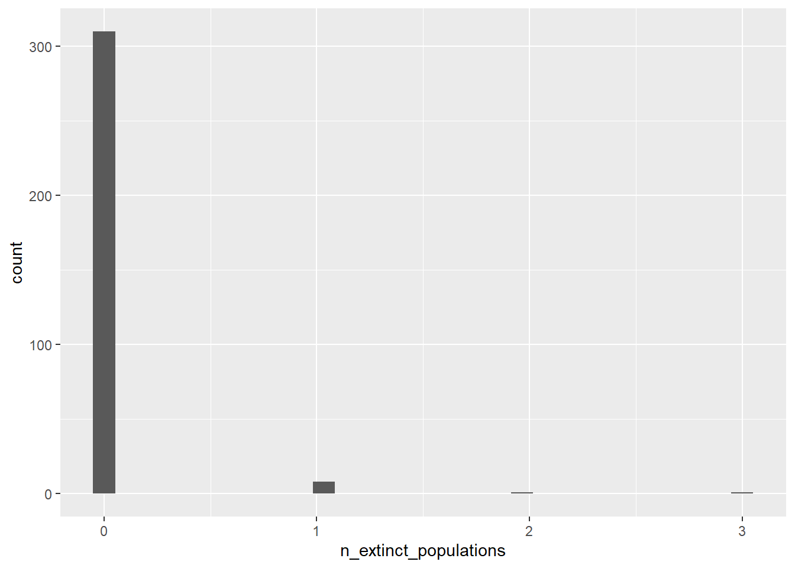
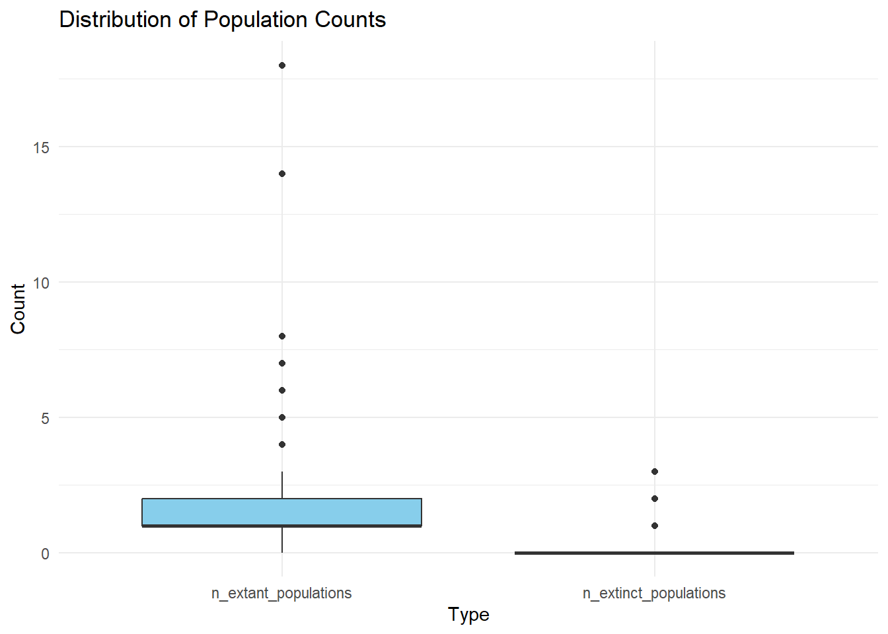
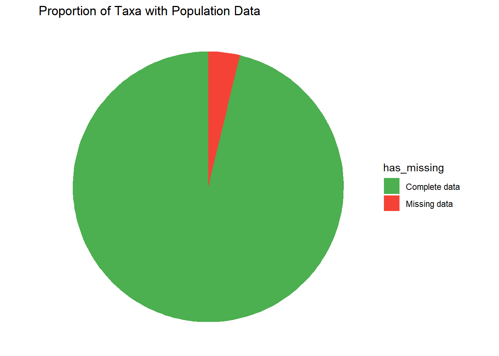
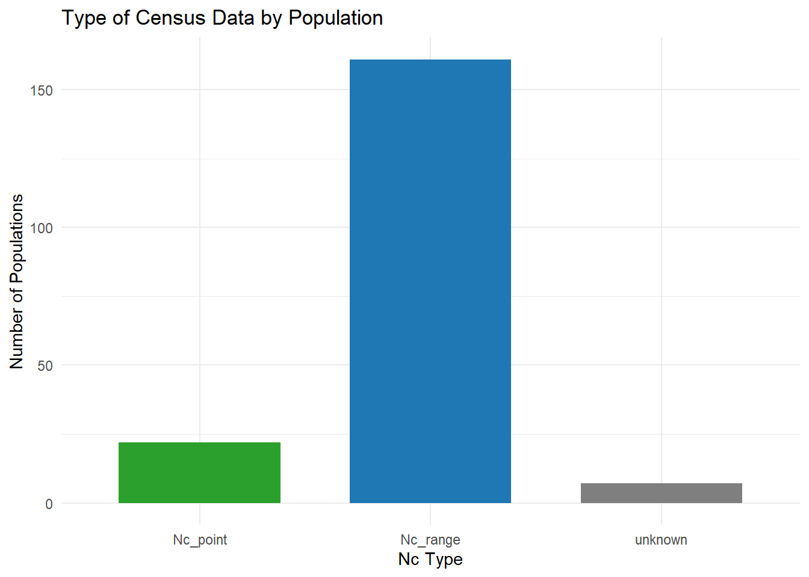
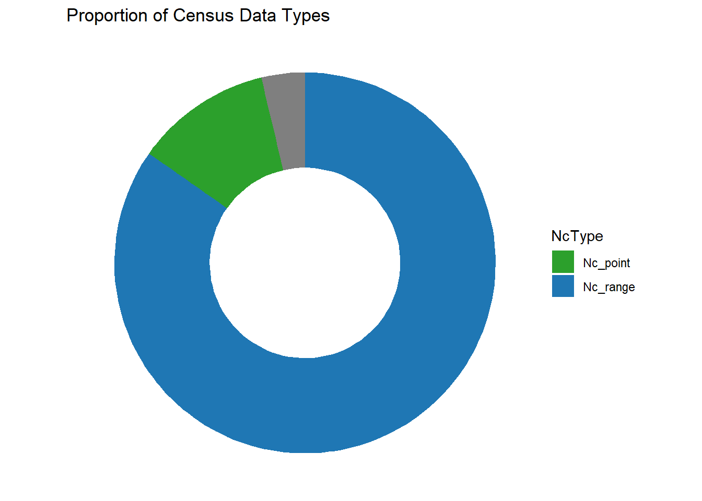
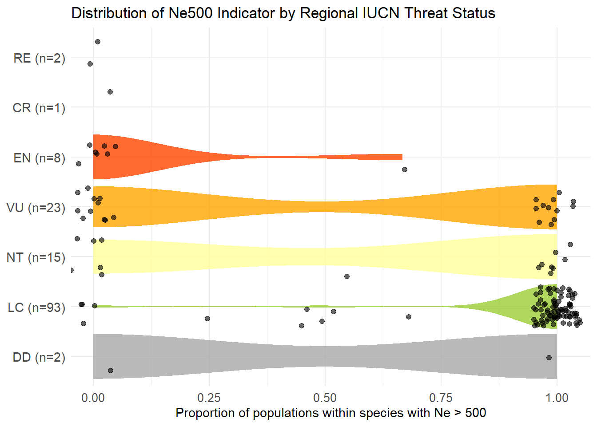
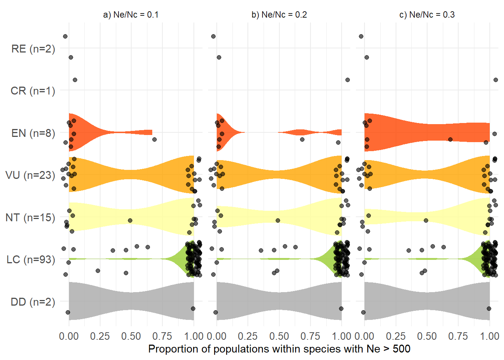
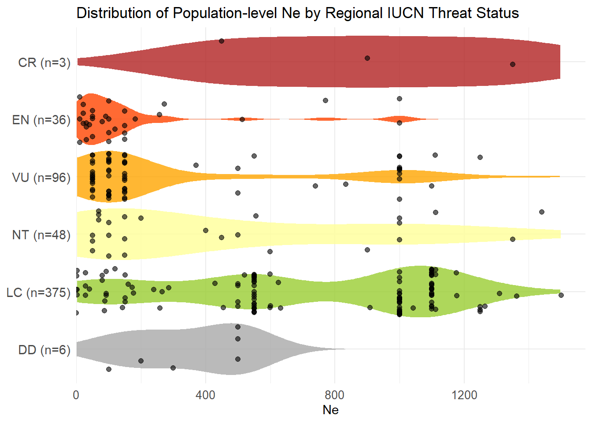

This page has been created to help facilitate the calculation of population genetic indicators for South African biodiversity assessments. The code builds upon that developed for a multinational genetic indicator study (see https://github.com/AliciaMstt/GeneticIndicators;1), but has been modified for complete taxon assessments and to generate the specific statistics and visuals needed for SA’s National Biodiversity Assessment.
The code presented here was developed for South Africa’s first complete taxon assessed - mammals. This data collection phase of this project was greatly facilitated by the coordination of Endangered Wildlife Trust, who were responsible for the mammal regional IUCN Red List Re-assessments in 2025. Access to experts through online workshops, emails, and more, greatly enabled the speedy collection of the necessary data on population numbers, dispersal buffers, etc.
For general information and guidance materials associated with the genetic indicators used here, please refer to https://ccgenetics.github.io/guidelines-genetic-diversity-indicators/.
About the Genetic Indicators
To help assess the genetic health of species and their populations, genetic diversity EBVS (ref) and indicators (ref) have been developed. Two indicators have been adopted into the Convention of Biological Diversity’s Global Monitoring Framework (ref 15/5). They are:
Headline Indicator (Goal A, Target 4): Proportion of populations within an effective population size (Ne) greater than 500 - otherwise known as the Ne 500 indicator
Complementary Indicator (Target 4): Proportion of populations maintained within species - otherwise known as the PM Indicator
Online data collection form using Kobotoolbox
Kobotoolbox is a free and open source tool for data collection and was the main platform used to capture the information used in the pilot genetic indicator study by Mastretta-Yanes et al.(2024).
If you would like to start your own projects that can feed into this greater dataset, you can either contact Dr Jessica da Silva (j.dasilva@sanbi.org.za) to gain access to the project or you can download the template file, which is the .xlsx version of the Kobo form.
Download the current South African specific template of this data collection form here.
Import the .xlsx file into Kobotoolbox Check Kobotoolbox documentation for further details on how to deploy and use it.
Genetic Indicator Scripts
Once all data have been entered, a series of code can be employed to process the data.
The code for this project has been heavily modified from https://github.com/AliciaMstt/GeneticIndicators to suit the specific needs of this project.
Data processing has been carried out through the following phases:
Data Export and Import:
Quality Checks: looks for errors and flags the potential problematic records for manual inspection. An output .csv file off all errors is generated to easily share and simplify the potential problems with the assessors who compiled the information.
Calculating the PM indicator:
Ne 500 Indicator calculation
Red List comparisons
1. Data Export and Import
1.1 Downoading the data from Kobo
Once all the data has been compiled, it will need to be downloaded for use in R. It is imperative the data are downloaded as a .csv file with the “values and headers” provided in XML format. This will streamline and simplify column recall. Otherwise several errors will prevent the functioning of the code.
1.2 Importing the Kobo Dataset into R
Once the dataset has been downloaded, it must be imported into R. Please ensure the .csv file is saved in the same directory as this file/script. Please ensure all relevant libraries are installed at the outset. dplyr is used extensively to streamline coding.
Explore the dataset to make sure it has loaded properly.
#Verify details of the datasetncol(kobo)
[1] 734
nrow(kobo)
[1] 399
#head(kobo)
##Verify key fields to make sure data exists in all recordskobo %>%filter(if_any(c(genus, species, Taxonomic_Order),~is.na(.) |str_trim(.) =="") ) %>%select(genus, species, Taxonomic_Order)
[1] genus species Taxonomic_Order
<0 rows> (or 0-length row.names)
#Count how many records are missingkobo %>%summarise(missing_genus =sum(is.na(genus) |str_trim(genus) ==""),missing_species =sum(is.na(species) |str_trim(species) ==""),missing_order =sum(is.na(Taxonomic_Order) |str_trim(Taxonomic_Order) =="") )
1.4 Filter out records which were marked as “not_approved”
In Kobo, it is possible to ‘validate’ records as a means of approving their quality. Conversely, invalidated records may be deemed spurious or questionable. The project lead has therefore flagged these records.
Check if any species are flagged as “validation_status_not_approved”:
genus species subspecies_variety
1 Rhinolophus rhodesiae
2 Neamblysomus julianae Bronberg Ridge subpopulation
3 Aethomys ineptus
Omit any invalidated records from the data set. A new dataset is created with only validated records.
kobo.1<- kobo %>%filter(taxonomic_group =="mammal") %>%# keep only Mammalsfilter(X_validation_status!="validation_status_not_approved")nrow(kobo.1)
[1] 320
1.4 Create a new dataset with a taxon column and an endemism column.
1.4.1 New taxon column
In the Kobo form names such as genus, species, and subspecies each received their own column. To help facilitate easy recall for quality checks, we add a new column at the end of the data set that combines those there components of the scientific name (genus, species and subspecies). A new dataset is then created with this new column.
Adding an endemism column. This is because there are two questions that relate to endemism and we want to consolidate them. The first is in Section 5, inquiring about whether populations are transboundary or not, and the second is Section 6 where data only exists for the species as a whole and whether the species is endemic or not. Sections 5 and 6 are never reported together so a new column to represent the residency status for each taxa needs to be created.
kobo.2<- kobo.1b %>%rowwise() %>%mutate(endemic_status =case_when(# Species-level info popsize_data =="data_for_species"& national_endemic =="yes"~"endemic", popsize_data =="data_for_species"& national_endemic =="no"~"non_endemic",# Population-level info popsize_data =="yes"&any(c_across(num_range("transboundary_pop", 1:25)) =="yes_transboundary", na.rm =TRUE) ~"non_endemic", popsize_data =="yes"&!any(c_across(num_range("transboundary_pop", 1:25)) =="yes_transboundary", na.rm =TRUE) &any(c_across(num_range("transboundary_pop", 1:25)) =="no_restricted", na.rm =TRUE) ~"endemic",# Insufficient info - will ask the specific question when no census associated questions are asked sa_endemic =="yes"~"endemic", sa_endemic =="no"~"non_endemic",# Catch-all (optional)TRUE~NA_character_ )) %>%ungroup()kobo.2%>%count(endemic_status)
# A tibble: 2 × 2
endemic_status n
<chr> <int>
1 endemic 65
2 non_endemic 255
List taxa with NA
#check the addition was done correctlyendemism_status <- kobo.2%>%filter(is.na(endemic_status)) %>%select(taxon, endemic_status)endemism_status
Once confirmation is received that the file is being read correctly, various quality checks must be performed to ensure no data is being excluded due to incorrect formatting, etc.
2.1 Check for common data capture errors
2.1.1 Unknown data numerical Typos
2.1.1.1 Converting -999 to NA
In the Kobo form, -999 was used to mark records as unknown for numerical data entries. This was used because answering the question was mandatory, so leaving it blank wasn’t possible. We have to change -999 to NA.
# Convert special Kobo codes (-999) to NAkobo.3<-kobo.2%>%mutate(n_extant_populations =na_if(as.integer(n_extant_populations), -999),n_extinct_populations =na_if(as.integer(n_extinct_populations), -999),n_hist_pops =na_if(as.integer(n_hist_pops), -999) ) %>%# Trim whitespace across all character fieldsmutate(across(where(is.character), ~str_trim(.))) %>%# Turn empty strings into proper NAmutate(across(where(is.character), ~na_if(., "")))
#####2.1.1.2 Reporting 999 instead of -999
It is possible some taxa have 999 as the number of extant or extinct populations noted, when this is likely a typo from -999 (unknown). The following code shows which species (if any) have 999 as the number of populations
check_n_pops <- kobo.3%>%filter(n_extant_populations <0| n_extant_populations ==0| n_hist_pops ==0| n_extant_populations ==999| n_extinct_populations ==999| n_hist_pops ==999) %>%mutate(issue ="Check population numbers (e.g. 0 or 999 may be incorrect)") %>%select(taxon, n_extant_populations, n_extinct_populations, n_hist_pops, issue)check_n_pops
#Looks for blank fields in various columns and that could impact downstream analysisrequired_fields <-c("taxon", "Taxonomic_Order", "n_extant_populations", "n_extinct_populations", "realm","national_endemic", "Previous_National_Red_List_Category", "Current_National_Red_List_Category", "IUCN_habitat", "species_range")missing_info <- kobo.3%>%filter(if_any(all_of(required_fields), ~is.na(.))) %>%mutate(issue ="Missing value in population information") %>%select(taxon, all_of(required_fields), issue)head(missing_info)
Genus, species and subspecies should each be a single word, check if there are cases where this is not the case. The only exception would be “var.” or “subsp.” in the subspecies_variety field.
Group all species with possible name errors together for fact checking
check_taxon_names <- kobo.3%>%filter(grepl(" ", genus) |grepl(" ", species) |grepl(" ", subspecies_variety)) %>%filter(!grepl("var.", subspecies_variety)) %>%filter(!grepl("subsp.", subspecies_variety)) %>%mutate(issue ="Check name format. More than 2 words") %>%select(genus, species, subspecies_variety, taxon, issue)check_taxon_names
# A tibble: 0 × 5
# ℹ 5 variables: genus <chr>, species <chr>, subspecies_variety <chr>,
# taxon <chr>, issue <chr>
2.4 Population information
2.4.1 How populations are defined - Other
Filter for rows where an ‘other’ explaining how populations have been defined. Then create a .csv file so that these records can be queried with assessors to see if they can be redefined into one or more of the existing categories.
# A tibble: 6 × 4
taxon defined_populations source_definition_populati…¹ issue
<chr> <chr> <chr> <chr>
1 Chrysospalax trevelyani other says severely fragmented bu… Othe…
2 Redunca arundinum other while translocations have b… Othe…
3 Mungos mungo other Species seems to vary its l… Othe…
4 Tadarida ventralis other Very little information bec… Othe…
5 Galago moholi other No population genetic study… Othe…
6 Otolemur crassicaudatus other Areas of suitable habitat w… Othe…
# ℹ abbreviated name: ¹source_definition_populations
2.4.2 Number of populations
To calculate the PM indicator, data must exist for extant and extinct populations. Let’s explore these data.
We want to identify if there are any unusual values that may indicate errors (e.g., very large numbers of populations, no populations, NAs).
Min. 1st Qu. Median Mean 3rd Qu. Max. NA's
0.00 1.00 1.00 1.64 2.00 18.00 12
We can also plot this distribution to help quickly identify if anything is unusual (e.g. very large numbers of populations or no populations).
#Displays barplot showing the number of species with varying numbers of extant populations ggplot(kobo.3, aes(x=n_extant_populations))+geom_histogram()
Min. 1st Qu. Median Mean 3rd Qu. Max.
0.00000 0.00000 0.00000 0.04063 0.00000 3.00000
#Displays barplot showing the number of species with varying numbers of extant populationsggplot(kobo.3, aes(x=n_extinct_populations))+geom_histogram()

# Create a tidy summary data frame manuallypop_summary <- tibble::tibble(Type =c("Total", "Mean", "Total", "Mean"),Population =c("Extant", "Extant", "Extinct", "Extinct"),Value =c(sum(kobo.3$n_extant_populations, na.rm =TRUE),mean(kobo.3$n_extant_populations, na.rm =TRUE),sum(kobo.3$n_extinct_populations, na.rm =TRUE),mean(kobo.3$n_extinct_populations, na.rm =TRUE) ))# Pivot for boxplotkobo_long <- kobo.3%>%select(n_extant_populations, n_extinct_populations) %>%pivot_longer(everything(), names_to ="Population_Type", values_to ="Count")ggplot(kobo_long, aes(x = Population_Type, y = Count)) +geom_boxplot(fill ="skyblue") +labs(title ="Distribution of Population Counts", y ="Count", x ="Type") +theme_minimal()

Overall summary stats for extant and extinct populations.
pop_summary %>%pivot_wider(names_from = Type, values_from = Value) %>%kable(caption ="Summary Statistics for Extant and Extinct Populations")
Summary Statistics for Extant and Extinct Populations
Population
Total
Mean
Extant
505
1.639610
Extinct
13
0.040625
#504 extant, 13 extinct
2.4.3 Resolving NAs
Any unknowns (NAs) will prevent the calculation of the indicator, so we want to double check if we can resolve any potential NAs.
Total records with NA in extant populations:
extant_NA <- kobo.3%>%filter(is.na(n_extant_populations)) %>%# add a column stating what needs to be checkedmutate(issue ="Why is extant pops NA?") %>%select(taxon, n_extant_populations, issue)head(extant_NA)
# A tibble: 6 × 3
taxon n_extant_populations issue
<chr> <int> <chr>
1 Chrysospalax trevelyani NA Why is extant pops NA?
2 Mungos mungo NA Why is extant pops NA?
3 Crocidura maquassiensis NA Why is extant pops NA?
4 Crocidura mariquensis NA Why is extant pops NA?
5 Grammomys cometes NA Why is extant pops NA?
6 Mastomys coucha NA Why is extant pops NA?
Specifically for extinct populations, unless specifically known, this field would be noted as 0, at least for these initial assessments. This is because it is not possible to every know what we do not know, but to monitor change we need to set a baseline. As per CBD, if a baseline is not explicitly known, then now is considered the starting point (get ref). Hence if we do not know what happened in the past, our baseline becomes the present.
Total taxa with NA in extinct populations:
extinct_NA <- kobo.3%>%filter(is.na(n_extinct_populations)) %>%# add a column stating what needs to be checkedmutate(issue ="Why is extinct pops NA?") %>%select(taxon, n_extinct_populations, issue)extinct_NA
The following code will show which taxa (if any) have 0 (zero) extant populations noted. In other words, they are nationally Extinct. This must simply be verified to ensure this wasn’t a typo.
The above shows extinct species, but the following code will show which taxa (if any) have extinct populations. What were considered extinct species previously, may now be considered as extinct subspecies or populations based on more recent molecular investigations of historical samples. This could is therefore just checking that these populations have been accounted for.
Of the taxa that have population size data, what kind of data is it? Effective population size (Ne), Census as a point estimate (Nc-point) or Census as a broad range (Nc-range)
unique(kobo.3$popsize_data) # Preview values in popsize_data. Confirm levels and spelling of response.
Check to see what combinations of population size data exist. Some unusual results would be high values for Ne + Nc, Ne only, or low to no values of Nc data compared to Ne data, as Ne data is generally limited.
##Standardize the fieldspsize_data <- kobo.3%>%filter(tolower(popsize_data) =="yes") %>%# Only taxa with any pop size datamutate(ne_clean =tolower(trimws(ne_pops_exists)),nc_clean =tolower(trimws(nc_pops_exists)) )##Assign nc/nc per population rowkobo_flagged <- psize_data %>%mutate(has_ne = ne_clean =="ne_available",has_nc = nc_clean =="yes" )taxon_summary <- kobo_flagged %>%group_by(taxon) %>%summarise(any_ne =any(has_ne, na.rm =TRUE),any_nc =any(has_nc, na.rm =TRUE),.groups ="drop" ) %>%mutate(data_combination =case_when( any_ne & any_nc ~"ne + nc", any_ne &!any_nc ~"ne only",!any_ne & any_nc ~"nc only",TRUE~"no ne/nc data" ) )taxon_summary %>%count(data_combination)
# A tibble: 3 × 2
data_combination n
<chr> <int>
1 nc only 128
2 ne + nc 6
3 ne only 3
# A tibble: 4 × 3
ne_pops_exists nc_pops_exists n
<chr> <chr> <int>
1 ne_available no 3
2 ne_available yes 6
3 no_genetic_data yes 124
4 other_genetic_info yes 4
2.4.3.2 Converting -999 to NA
#Recall what the data looks like in the ne_pops_exists columnhead(kobo.3$ne_pops_exists)
[1] NA NA NA "no_genetic_data"
[5] NA NA
# Get all unique Ne values from all 25 population columnsne_cols <-paste0("Ne_pop", 1:25)
#filter for records where ne data is availablekobo.3%>%filter(tolower(ne_pops_exists) =="ne_available") %>%select(taxon, starts_with("Ne_pop"))
# A tibble: 9 × 27
taxon ne_pops_exists Ne_pop1 Ne_pop2 Ne_pop3 Ne_pop4 Ne_pop5 Ne_pop6 Ne_pop7
<chr> <chr> <dbl> <dbl> <dbl> <int> <int> <int> <lgl>
1 Panthe… ne_available 1.51e2 -999 -999 -999 NA NA NA
2 Lycaon… ne_available 2.18e1 10.2 -999 NA NA NA NA
3 Caraca… ne_available 2.8 e1 92 -999 -999 NA NA NA
4 Mesopl… ne_available 5 e2 NA NA NA NA NA NA
5 Cerato… ne_available 6.9 e1 NA NA NA NA NA NA
6 Loxodo… ne_available 6 e2 -999 -999 NA NA NA NA
7 Equus … ne_available 3 e0 NA NA NA NA NA NA
8 Sousa … ne_available 3.1 e1 NA NA NA NA NA NA
9 Miniop… ne_available 6 e5 NA NA NA NA NA NA
# ℹ 18 more variables: Ne_pop8 <lgl>, Ne_pop9 <lgl>, Ne_pop10 <lgl>,
# Ne_pop11 <lgl>, Ne_pop12 <lgl>, Ne_pop13 <lgl>, Ne_pop14 <lgl>,
# Ne_pop15 <lgl>, Ne_pop16 <lgl>, Ne_pop17 <lgl>, Ne_pop18 <lgl>,
# Ne_pop19 <lgl>, Ne_pop20 <lgl>, Ne_pop21 <lgl>, Ne_pop22 <lgl>,
# Ne_pop23 <lgl>, Ne_pop24 <lgl>, Ne_pop25 <lgl>
The Ne data contains -999 values which should be converted to NA.
# Step 1: Identify Ne_pop columns. ne_pop_cols <-names(kobo.3)[grepl("^Ne_pop", names(kobo.3))]# Step 2: Convert columns from character to numeric and replace -999 with NA.kobo.3[ne_pop_cols] <-lapply(kobo.3[ne_pop_cols], function(x) { x <-as.numeric(x) x[x ==-999] <-NAreturn(x)})#Verify whether any -999 remainsummary(kobo.3[ne_pop_cols])
Ne_pop1 Ne_pop2 Ne_pop3 Ne_pop4 Ne_pop5
Min. : 3 Min. :10.20 Min. : NA Min. : NA Min. : NA
1st Qu.: 28 1st Qu.:30.65 1st Qu.: NA 1st Qu.: NA 1st Qu.: NA
Median : 69 Median :51.10 Median : NA Median : NA Median : NA
Mean : 66823 Mean :51.10 Mean :NaN Mean :NaN Mean :NaN
3rd Qu.: 500 3rd Qu.:71.55 3rd Qu.: NA 3rd Qu.: NA 3rd Qu.: NA
Max. :600000 Max. :92.00 Max. : NA Max. : NA Max. : NA
NA's :311 NA's :318 NA's :320 NA's :320 NA's :320
Ne_pop6 Ne_pop7 Ne_pop8 Ne_pop9 Ne_pop10
Min. : NA Min. : NA Min. : NA Min. : NA Min. : NA
1st Qu.: NA 1st Qu.: NA 1st Qu.: NA 1st Qu.: NA 1st Qu.: NA
Median : NA Median : NA Median : NA Median : NA Median : NA
Mean :NaN Mean :NaN Mean :NaN Mean :NaN Mean :NaN
3rd Qu.: NA 3rd Qu.: NA 3rd Qu.: NA 3rd Qu.: NA 3rd Qu.: NA
Max. : NA Max. : NA Max. : NA Max. : NA Max. : NA
NA's :320 NA's :320 NA's :320 NA's :320 NA's :320
Ne_pop11 Ne_pop12 Ne_pop13 Ne_pop14 Ne_pop15
Min. : NA Min. : NA Min. : NA Min. : NA Min. : NA
1st Qu.: NA 1st Qu.: NA 1st Qu.: NA 1st Qu.: NA 1st Qu.: NA
Median : NA Median : NA Median : NA Median : NA Median : NA
Mean :NaN Mean :NaN Mean :NaN Mean :NaN Mean :NaN
3rd Qu.: NA 3rd Qu.: NA 3rd Qu.: NA 3rd Qu.: NA 3rd Qu.: NA
Max. : NA Max. : NA Max. : NA Max. : NA Max. : NA
NA's :320 NA's :320 NA's :320 NA's :320 NA's :320
Ne_pop16 Ne_pop17 Ne_pop18 Ne_pop19 Ne_pop20
Min. : NA Min. : NA Min. : NA Min. : NA Min. : NA
1st Qu.: NA 1st Qu.: NA 1st Qu.: NA 1st Qu.: NA 1st Qu.: NA
Median : NA Median : NA Median : NA Median : NA Median : NA
Mean :NaN Mean :NaN Mean :NaN Mean :NaN Mean :NaN
3rd Qu.: NA 3rd Qu.: NA 3rd Qu.: NA 3rd Qu.: NA 3rd Qu.: NA
Max. : NA Max. : NA Max. : NA Max. : NA Max. : NA
NA's :320 NA's :320 NA's :320 NA's :320 NA's :320
Ne_pop21 Ne_pop22 Ne_pop23 Ne_pop24 Ne_pop25
Min. : NA Min. : NA Min. : NA Min. : NA Min. : NA
1st Qu.: NA 1st Qu.: NA 1st Qu.: NA 1st Qu.: NA 1st Qu.: NA
Median : NA Median : NA Median : NA Median : NA Median : NA
Mean :NaN Mean :NaN Mean :NaN Mean :NaN Mean :NaN
3rd Qu.: NA 3rd Qu.: NA 3rd Qu.: NA 3rd Qu.: NA 3rd Qu.: NA
Max. : NA Max. : NA Max. : NA Max. : NA Max. : NA
NA's :320 NA's :320 NA's :320 NA's :320 NA's :320
2.5 Compile all errors in a single for assessors to review
This code will generate a .csv file that can be sent to others for manual error checking. Note: full_join only takes two dataframes at a time; therefore we needed to link them with %>%. To minimize user involvement, everytime this code is run the saved .csv file will automatically insert the date it is created. This is to facilitate version control.
# Combine all issue check data frames using full_join#Remember to add full_join for all issues you want to be included in this file.info_to_check <- check_n_pops %>%full_join(check_taxon_names) %>%full_join(missing_info) %>%full_join(dp_other_comments) %>%full_join(extinct_pop) %>%full_join(extant_NA) %>%full_join(extinct_NA) %>%# Keep only selected columnsselect(taxon, issue)
2.6 Passed Quality Checks
The above steps should be repeated when until all potential errors have been resolved. When all Quality Checks pass, convert the dataframe name to indicate its clean status.
IUCN Red List assessments may be done at the species, subspecies and subpopulation level. It would be good to get a breakdown of the number of assessment at each level.
Visualise the proportion of taxa with number of population info.
ggplot(taxon_na_summary, aes(x ="", y = n, fill = has_missing)) +geom_col(width =1) +coord_polar(theta ="y") +labs(title ="Proportion of Taxa with Population Data") +theme_void() +scale_fill_manual(values =c("Complete data"="#4CAF50", "Missing data"="#F44336"))

3.1.2 How Populations are Defined
A question in the Kobo form asks to select all methods used to define populations. One or more of the following categories could be selected:
genetic_clusters
geographic_boundaries
eco_biogeo_proxies
adaptive_traits
management_units
other
Any combination of the list above is possible, as noted in the following frequency table:
kobo.cleaned %>%count(defined_populations, name ="n") %>%mutate(defined_populations =substr(defined_populations, 1, 50)) %>%# show only first 50 characters as the column width is too longselect(defined_populations, n) %>%arrange(desc(n)) %>%kable()
Note: Other classifications should have been checked in [2.2.2 Extant and extinct populations], so any remaining Other should be accepted as not being able to group into any other category.
It is hard to group the above methods, so we will keep the original groups with n >=10 in the above list, and tag the combinations that appear few times as as “other_combinations”. N>=10 is fairly arbitrary. As more records are accumulated, the might need to be increased. The multinational study filtered at n>=15.
Which groups have n>=10?
# Step 1: Count and truncate defined_pops_summary <- kobo.cleaned %>%count(defined_populations, name ="n") %>%mutate(defined_populations =substr(defined_populations, 1, 50)) # Step 2: Filter high-frequency responses top_defined <- defined_pops_summary %>%filter(n >=15) # Step 3: Group lower-frequency responses as "other_combinations" other_combination <- defined_pops_summary %>%filter(n <15) %>%summarise(defined_populations ="other_combinations",n =sum(n)) # Step 4: Combine results and order popdef_summary <-bind_rows(top_defined, other_combination) %>%arrange(desc(n)) # Step 5: Display popdef_summary %>%kable()
defined_populations
n
other_combinations
125
dispersal_buffer
55
dispersal_buffer eco_biogeo_proxies
41
genetic_clusters
35
geographic_boundaries dispersal_buffer
27
eco_biogeo_proxies
19
eco_biogeo_proxies adaptive_traits
18
3.1.3 Population Size
3.1.3.1 Data available for species, population or no data exists
Let’s look at the kind of population size data are available. The summary below shows the number of taxa that have data available for populations, the species as a whole, or no data is available.
Check to see what combinations of population size data exist. Some unusual results would be high values for Ne + Nc, Ne only, or low to no values of Nc data compared to Ne data, as Ne data is generally limited.
##Counts populations with Nc data# Adjust the values to match what you observenc_tally <- kobo.cleaned %>%filter(tolower(nc_pops_exists) =="yes") %>%select(all_of(nc_type_cols)) %>%pivot_longer(cols =everything(), names_to ="population", values_to ="NcType") %>%filter(!is.na(NcType) & NcType !="") %>%count(NcType, sort =TRUE)nc_tally
# A tibble: 3 × 2
NcType n
<chr> <int>
1 Nc_range 161
2 Nc_point 22
3 unknown 7
# Code above will count any non-empty value in NcType_Pop fields, even if they're inconsistent. If unknown is noted, that means the population actually has no census information, but other populations in that species do. So Unknown should be removed from visuals.#### Need to exclude the unknowns for all plots and calculations
##Lists all taxa ad populations with census data (unknowns included)nc_types_list <- kobo.cleaned %>%filter(tolower(nc_pops_exists) =="yes") %>%select(taxon, all_of(nc_type_cols)) %>%pivot_longer(cols =all_of(nc_type_cols), names_to ="population", values_to ="NcType" ) %>%filter(!is.na(NcType) & NcType !="") %>%mutate(pop =as.integer(gsub("NcType_pop", "", population))) %>%select(taxon, pop, NcType)
Count how many taxa have at least one population of each type.
nc_types_list %>%distinct(taxon, NcType) %>%count(NcType, name ="unique_taxa_count") %>%arrange(desc(unique_taxa_count))
#Are there taxa with Nc_range and Nc_point?taxa_nc <- nc_types_list %>%distinct(taxon, NcType)# Then find taxa that have both Nc_range and Nc_pointtaxa_with_both <- taxa_nc %>%filter(NcType %in%c("Nc_range", "Nc_point")) %>%group_by(taxon) %>%summarise(n_types =n_distinct(NcType), .groups ="drop") %>%filter(n_types ==2)# Optional: see which ones they aretaxa_with_both_names <- taxa_with_both$taxon# If you want the full rows for those taxataxa_nc %>%filter(taxon %in% taxa_with_both_names)
# A tibble: 3 × 2
NcType n
<chr> <int>
1 Nc_range 122
2 Nc_point 12
3 unknown 4
As a check, I want to make sure that all unknowns do not have unique taxa compared to the list for Nc_range and Nc_point. This could impact on stats and downstream analyses.For example, there is a discrepancy in taxa with Pop size data available (97) and the number listed in Section 5 (93).These should be populations where Nc data is available for other populations in the taxon. Hence there should be no unique values for unknown compared to the other Nc Type. If so this needs to be corrected. This might not resolve all inconsistencies, but is a good start.
#CReate separate dataframes for each NcTypenc_range_taxa <- taxa_nc %>%filter(NcType =="Nc_range") %>%select(taxon)nc_point_taxa <- taxa_nc %>%filter(NcType =="Nc_point") %>%select(taxon)unknown_taxa <- taxa_nc %>%filter(NcType =="unknown") %>%select(taxon)
#Taxa common to Nc_range and Nc_point:common_range_point <-inner_join(nc_range_taxa, nc_point_taxa, by ="taxon")common_range_point
# A tibble: 0 × 1
# ℹ 1 variable: taxon <chr>
#Taxa unique to Nc_range (not in Nc_point):unique_range <-anti_join(nc_range_taxa, nc_point_taxa, by ="taxon")unique_range
#Taxa unique to unknown (not in either Nc_range or Nc_point):#Taxa with Nc of some typeknown_taxa <-bind_rows(nc_range_taxa, nc_point_taxa) %>%distinct()known_taxa
#134 in total. With 121 unique for range, this suggests 12 are for Nc_point. Matches table.
#Lists taxa unique to unknown. This should be 0, if not it needs to be corrected.unique_unknown <-anti_join(unknown_taxa, known_taxa, by ="taxon")unique_unknown
# A tibble: 0 × 1
# ℹ 1 variable: taxon <chr>
We can now visualise this information. Will need to update plots not to show unknown.
Census data by population
#Plot this## check what values actually exist:unique(nc_tally$NcType)
[1] "Nc_range" "Nc_point" "unknown"
ggplot(nc_tally, aes(x = NcType, y = n, fill = NcType)) +geom_bar(stat ="identity", width =0.7) +labs(title ="Type of Census Data by Population",x ="Nc Type",y ="Number of Populations" ) +scale_fill_manual(values =c("Nc_range"="#1f77b4", "Nc_point"="#2ca02c")) +theme_minimal() +theme(legend.position ="none")

#Donut plotnc_tally$fraction <- nc_tally$n /sum(nc_tally$n)nc_tally$ymax <-cumsum(nc_tally$fraction)nc_tally$ymin <-c(0, head(nc_tally$ymax, n =-1))ggplot(nc_tally, aes(ymax = ymax, ymin = ymin, xmax =4, xmin =3, fill = NcType)) +geom_rect() +coord_polar(theta ="y") +xlim(c(2, 4)) +theme_void() +scale_fill_manual(values =c("Nc_range"="#1f77b4", "Nc_point"="#2ca02c")) +labs(title ="Proportion of Census Data Types")

Ne As was done for Nc data, we will take a closer look at the Ne data.
#recall what the dat looks like in the ne_pops_exists columhead(kobo.cleaned$ne_pops_exists)
[1] NA NA NA "no_genetic_data"
[5] NA NA
# Get all unique Ne values from all 25 population columnsne_cols <-paste0("Ne_pop", 1:25)
#filter for records where ne data is availablekobo.cleaned %>%filter(tolower(ne_pops_exists) =="ne_available") %>%select(taxon, starts_with("Ne_pop"))
# A tibble: 9 × 27
taxon ne_pops_exists Ne_pop1 Ne_pop2 Ne_pop3 Ne_pop4 Ne_pop5 Ne_pop6 Ne_pop7
<chr> <chr> <dbl> <dbl> <dbl> <dbl> <dbl> <dbl> <dbl>
1 Panthe… ne_available 1.51e2 NA NA NA NA NA NA
2 Lycaon… ne_available 2.18e1 10.2 NA NA NA NA NA
3 Caraca… ne_available 2.8 e1 92 NA NA NA NA NA
4 Mesopl… ne_available 5 e2 NA NA NA NA NA NA
5 Cerato… ne_available 6.9 e1 NA NA NA NA NA NA
6 Loxodo… ne_available 6 e2 NA NA NA NA NA NA
7 Equus … ne_available 3 e0 NA NA NA NA NA NA
8 Sousa … ne_available 3.1 e1 NA NA NA NA NA NA
9 Miniop… ne_available 6 e5 NA NA NA NA NA NA
# ℹ 18 more variables: Ne_pop8 <dbl>, Ne_pop9 <dbl>, Ne_pop10 <dbl>,
# Ne_pop11 <dbl>, Ne_pop12 <dbl>, Ne_pop13 <dbl>, Ne_pop14 <dbl>,
# Ne_pop15 <dbl>, Ne_pop16 <dbl>, Ne_pop17 <dbl>, Ne_pop18 <dbl>,
# Ne_pop19 <dbl>, Ne_pop20 <dbl>, Ne_pop21 <dbl>, Ne_pop22 <dbl>,
# Ne_pop23 <dbl>, Ne_pop24 <dbl>, Ne_pop25 <dbl>
# To calculate the number of populations with Ne data# Pivot only the Ne_pop columnsne_counts <-kobo.cleaned %>%filter(tolower(ne_pops_exists) =="ne_available") %>%select(taxon, all_of(ne_cols)) %>%pivot_longer(cols =all_of(ne_cols), names_to ="population", values_to ="Ne_value") %>%filter(!is.na(Ne_value) & Ne_value !="") %>%summarise(n_Ne_pops =n())ne_counts
# A tibble: 1 × 1
n_Ne_pops
<int>
1 11
Like was done with the Nc data, lets explore the populations by creating a list on the taxa and the populations
Ne_pops <- kobo.cleaned %>%filter(tolower(ne_pops_exists) =="ne_available") %>%select(taxon, all_of(ne_cols)) %>%pivot_longer(cols =all_of(ne_cols), names_to ="pop", values_to ="Ne")Ne_pops %>%filter(!is.na(Ne)) %>%# Keep only rows where Ne value is presentselect(taxon, pop, Ne) %>%# Select relevant columnsarrange(taxon, pop)
Below will list the unique taxa from the list above.
taxa_ne <- Ne_pops %>%filter(!is.na(Ne)) %>%# Keep only rows where Ne value is presentselect(taxon, pop, Ne) %>%# Select relevant columnsarrange(taxon, pop) %>%distinct(taxon)taxa_ne
Now to compare the lists of Nc and Ne taxa and only show and count the unique ones. This is a check to make sure the same counts appear as in the preliminary checks
#Taxa only in Nc (not in Ne):anti_join(taxa_nc, taxa_ne, by ="taxon")
#Creates a list of unique taxa with pop size databind_rows(mutate(taxa_nc, source ="Nc"),mutate(taxa_ne, source ="Ne")) %>%group_by(taxon) %>%summarise(source =paste(sort(unique(source)), collapse =", ")) %>%arrange(taxon)
Visual of Ne and Nc data Availability To visualize the number of Ne, Nc Point, and NC Range populations, we can create a stacked or grouped bar plot showing this breakdown per taxon or as overall counts.
###Prepare a combined data set# Step 1: Prepare Nc categoriesnc_total <- nc_tally %>%rename(category = NcType) %>%# If your count table has Nc_categorymutate(type ="Nc") # Label as census# Step 2: Prepare Ne as a single rowne_total <- ne_counts %>%summarise(n =sum(n_Ne_pops, na.rm =TRUE)) %>%# Count total Ne populationsmutate(category ="Ne", type ="Ne") # Label and match format# Step 3: Combine both tablescombined_data <-bind_rows(nc_total, ne_total) %>%select(type, category, n) %>%arrange(type, desc(n)) # Optional: sort for readability# View combined tablecombined_data
# A tibble: 4 × 3
type category n
<chr> <chr> <int>
1 Nc Nc_range 161
2 Nc Nc_point 22
3 Nc unknown 7
4 Ne Ne 11
4. Calculating the PM indicator
4.1 Extracting the relevant information
From the kobo.cleaned dataset discard the records where n_extinct_populations and n_extant_populations is NA.
###Creates a new dataset with records having NA in (n_extant_populations) OR (n_extinct_populations)PM_data <- kobo.cleaned %>%filter(!(is.na(n_extinct_populations) |is.na(n_extant_populations)))
Show the most relevant columns used to calculate the PM indicator:
The PM indicator is the proportion of populations within species that are maintained (still existing). This is estimated by dividing the number of existing populations over all known populations for the species (extant + extinct). A proportional value between 0 and 1 is generated for each taxa.
Once individual PM indicator values have been generated they can be averaged according to various criteria. In particular, an average PM value is needed per taxonomic group before an overall national metric can be quantified. The taxonomic averages are necessary to account or differences in species numbers within each group.
avg_PM_by_taxonomic_group <- PM_data %>%group_by(taxonomic_group) %>%summarise(avg_indicator_PM =mean(indicator_PM, na.rm =TRUE),sd_indicator_PM =sd(indicator_PM, na.rm =TRUE),n =sum(!is.na(indicator_PM)),se_indicator_PM = sd_indicator_PM /sqrt(n),n =n()) %>%# optional: shows number of rows per taxongroup_split(taxonomic_group) %>%setNames(unique(PM_data$taxonomic_group))avg_PM_by_taxonomic_group
4.4 Breaking down the PM indicator by different categories
The following code will enable us to explore whether there are any differences in indicator values based on different criteria, such as taxonomic order, endemism, threat status and more.
kruskal.test(indicator_PM ~ Taxonomic_Order, data = PM_data)
Kruskal-Wallis rank sum test
data: indicator_PM by Taxonomic_Order
Kruskal-Wallis chi-squared = 11.819, df = 14, p-value = 0.6209
#creates a table of the results, if neededknitr::kable(avg_PM_by_Order, caption ="Average PM by Taxonomic Order")
Average PM by Taxonomic Order
Taxonomic_Order
avg_indicator_PM
sd_indicator_PM
n
se_indicator_PM
Afrosoricida
0.9803922
0.0808452
17
0.0196078
Artiodactyla
0.9166667
0.2803060
36
0.0467177
Carnivora
0.9815789
0.0865409
38
0.0140388
Cetacea
1.0000000
0.0000000
43
0.0000000
Chiroptera
0.9843750
0.0876840
64
0.0109605
Eulipotyphla
1.0000000
0.0000000
12
0.0000000
Hyracoidea
1.0000000
0.0000000
3
0.0000000
Lagomorpha
1.0000000
0.0000000
8
0.0000000
Macroscelidea
1.0000000
0.0000000
8
0.0000000
Perissodactyla
0.9000000
0.2236068
5
0.1000000
Pholidota
1.0000000
NA
1
NA
Primates
1.0000000
0.0000000
6
0.0000000
Proboscidea
1.0000000
NA
1
NA
Rodentia
0.9938462
0.0496139
65
0.0061538
Tubulidentata
1.0000000
NA
1
NA
4.4.2 Exploring PM differences in Endemism
Need to create a new column in the dataset acknowledging the overall species as a national endemic (i.e., taxa with no transboundary populations and where it is indicated taxa for species as a whole is a national endemic)
Wilcoxon rank sum test with continuity correction
data: indicator_PM by endemic_status
W = 7319, p-value = 0.1112
alternative hypothesis: true location shift is not equal to 0
#creates a table of the results, if neededknitr::kable(avg_PM_by_endemism, caption ="Average PM by Endemism")
# A tibble: 1 × 5
.y. n effsize method magnitude
* <chr> <int> <dbl> <chr> <ord>
1 indicator_PM 308 0.191 eta2[H] large
# Dunn's post hoc test with Holm correctiondunn_results <- PM_data %>%dunn_test(indicator_PM ~ Current_National_Red_List_Category, p.adjust.method ="holm")# View resultsdunn_results
# Count by population change directionpop_change_counts <- PM_data %>%filter(!is.na(pop_change_direction)) %>%count(pop_change_direction) %>%mutate(percent = n /sum(n) *100)pop_change_counts
From the kobo.cleaned dataset discard the records where there is no population size data. In other words, where size data either exists for the population or species as a whole.
#Creates a new dataset with only taxa with size dataNe500_data <- kobo.cleaned %>%mutate(popsize_data =tolower(popsize_data)) %>%filter( popsize_data %in%c("yes", "data_for_species") )#Check how many rows match popsize_data == "yes" or "data_for_species"Ne500_data %>%count(popsize_data)
# A tibble: 2 × 2
popsize_data n
<chr> <int>
1 data_for_species 25
2 yes 137
The questions asked for size data available for the species as a whole and for individual populations differed, so we will need to inspect the two categories separately.
5.2 Census data for species as a whole
# Filter for data_for_species and count nc_type_sp valuesNe500_sp <- Ne500_data %>%filter(tolower(popsize_data) =="data_for_species" )Ne500_sp %>%count(nc_type_sp)
# A tibble: 2 × 2
nc_type_sp n
<chr> <int>
1 Nc_point 5
2 Nc_range 20
We need to convert the categorical range values into number. So we create a function to do this step by step.
range_conversion <-function(x) { dplyr::case_when( x =="more_5000_bymuch"~10000, x =="more_5000"~5500, x =="less_5000_bymuch"~500, x =="less_5000"~4500, x =="range_includes_5000"~5001,TRUE~NA_real_ )}
Then add additional columns with a converted Nc range value and another accounting combining the point and range census values for the species.
Ne500_sp <-Ne500_sp %>%mutate(nc_sp_range_value =range_conversion(nc_range_sp), #Create a new column with #Create a unified census column using point OR range data for the speciessp_census_value =coalesce(nc_point_sp, nc_sp_range_value) ) Ne500_sp%>%select(taxon, nc_type_sp, nc_point_sp, nc_range_sp, nc_sp_range_value, sp_census_value)
# A tibble: 25 × 6
taxon nc_type_sp nc_point_sp nc_range_sp nc_sp_range_value sp_census_value
<chr> <chr> <int> <chr> <dbl> <dbl>
1 Ourebia… Nc_range NA less_5000_… 500 500
2 Lupulel… Nc_range NA more_5000_… 10000 10000
3 Phacoch… Nc_point 0 <NA> NA 0
4 Aepycer… Nc_range NA more_5000_… 10000 10000
5 Cephalo… Nc_range NA more_5000_… 10000 10000
6 Redunca… Nc_point 3884 <NA> NA 3884
7 Nesotra… Nc_range NA less_5000 4500 4500
8 Felis n… Nc_range NA less_5000 4500 4500
9 Cistugo… Nc_range NA less_5000_… 500 500
10 Rhinolo… Nc_range NA less_5000_… 500 500
# ℹ 15 more rows
# A tibble: 25 × 9
taxon national_endemic sp_whole_or_part nc_point_sp nc_range_sp
<chr> <chr> <chr> <int> <chr>
1 Ourebia ourebi our… no only_sa NA less_5000_…
2 Lupulella mesomelas no only_sa NA more_5000_…
3 Phacochoerus aethi… yes <NA> 0 <NA>
4 Aepyceros melampus… yes <NA> NA more_5000_…
5 Cephalophus natale… no only_sa NA more_5000_…
6 Redunca arundinum no only_sa 3884 <NA>
7 Nesotragus moschat… no only_sa NA less_5000
8 Felis nigripes no only_sa NA less_5000
9 Cistugo leseueri yes <NA> NA less_5000_…
10 Rhinolophus cerven… yes <NA> NA less_5000_…
# ℹ 15 more rows
# ℹ 4 more variables: nc_sp_range_value <dbl>, sp_census_value <dbl>,
# sp_census_adjusted <dbl>, nc_adjusted <chr>
####5.2.2 Converting Nc to Ne Now, that all point and census has been adjusted for the transboundary nature of the species, we can convert census data to Ne using the different conversion ratios.
While the indicator calculations are done at the population level, if we know entire populations have an estimated Ne below 500, it is fair to assume that if these species showed structure, their Ne values would likely be even lower. So we an include these species as part of our downstream indicator calculations
Even if there are multiple populations within each, we can treat it as a single population to calculate an indicator value since the whole species is less that Ne 500; therefore all populations within it would also be below Ne500.
#### Not sure this should be done here.##Adding indicator value columnslowNe_sp <- lowNe_sp %>%mutate(sp_indicator_0.1 =ifelse(!is.na(sp_Ne_from_Nc_0.1) & sp_Ne_from_Nc_0.1>500, 1, 0),sp_indicator_0.2 =ifelse(!is.na(sp_Ne_from_Nc_0.2) & sp_Ne_from_Nc_0.2>500, 1, 0),sp_indicator_0.3 =ifelse(!is.na(sp_Ne_from_Nc_0.3) & sp_Ne_from_Nc_0.3>500, 1, 0) )lowNe_sp %>%select(taxon, taxonomic_group,sp_census_adjusted, sp_Ne_from_Nc_0.1, sp_indicator_0.1,sp_indicator_0.2, sp_indicator_0.3)
Before working through the data, we need to define the population columns
# Population-level columnsNc_type_cols <-paste0("NcType_pop", 1:25) # Type of size data: "Ne", "Nc_point", "Nc_range"Nc_point_cols <-paste0("NcPoint_pop", 1:25) # Point estimates of population sizeNc_range_cols <-paste0("NcRange_pop", 1:25) # Range estimates of population sizetransboundary_cols <-paste0("transboundary_pop", 1:25) # Yes/No flag for transboundary populationspercent_cols <-paste0("percent_pop", 1:25) # % of pop in SA (if transboundary)
As we did for the species, we need to Convert census range to numeric values for each population using the range_conversion function noted in 5.2
We now need to make adjustments per population depending if it is transboundary (also exists outside of South Africa). For populations where the size is for the population as a whole adjustments are not needed.
for(i in1:25) { census_col <-paste0("census_pop", i) transboundary_col <- transboundary_cols[i] sa_col <- percent_cols[i] percent_col <-paste0("percent_pop", i) adjusted_col <-paste0("census_adjusted_pop", i)#Create a new column (census_adjusted_pop) that calculates the full Nc for transboundary populations based on the percent of the pop in SA Ne500_pop <- Ne500_pop %>%mutate("{adjusted_col}":=case_when( .data[[transboundary_col]] =="yes_transboundary"&!is.na(.data[[percent_col]]) & .data[[percent_col]] >0~ .data[[census_col]] / (.data[[percent_col]] /100),TRUE~ .data[[census_col]] ) )}
###SANITY CHECK: ##Specifically checking for a species where the census value was for the whole pop and therefore did not need adjusting Ne500_pop %>%filter(taxon =="Balaenoptera musculus intermedia") %>%select( taxon,starts_with("census_pop"),starts_with("percent_pop"),starts_with("whole_or_parts_pop"),starts_with("census_adjusted_pop") )
#Other check for adjustments when pop is not transboundary or where an adjustment should have happenedNe500_pop %>%select( taxon, transboundary_pop1, whole_or_part_pop1, percent_pop1, census_pop1, census_adjusted_pop1 ) %>%mutate(adjusted_applied =if_else(census_pop1 != census_adjusted_pop1, TRUE, FALSE) )
5.4 Effective population size data for individual populations
Some populations have Ne data instead of or in addition to census data. In such cases, the Ne data should take precedent.
for(i in1:25) { census_col <-paste0("census_adjusted_pop", i) Ne_col <-paste0("Ne_pop", i) # assuming these columns exist Ne01_col <-paste0("final_Ne_pop", i, "_0.1") Ne02_col <-paste0("final_Ne_pop", i, "_0.2") Ne03_col <-paste0("final_Ne_pop", i, "_0.3")#The coalesce() function chooses Ne_pop[1-25] if it’s not NA, overriding the Nc calculating from the census values; otherwise it uses the Nc-derived estimate. Ne500_pop <- Ne500_pop %>%mutate("{Ne01_col}":=coalesce(.data[[Ne_col]], .data[[census_col]] *0.1),"{Ne02_col}":=coalesce(.data[[Ne_col]], .data[[census_col]] *0.2),"{Ne03_col}":=coalesce(.data[[Ne_col]], .data[[census_col]] *0.3) )}####Inspect for correctnessNe500_pop %>%select(taxon, Current_National_Red_List_Category, census_adjusted_pop1, Ne_pop1, final_Ne_pop1_0.1, final_Ne_pop1_0.2, final_Ne_pop1_0.3)
# A tibble: 137 × 7
taxon Current_National_Red…¹ census_adjusted_pop1 Ne_pop1 final_Ne_pop1_0.1
<chr> <chr> <dbl> <dbl> <dbl>
1 Oreotr… least_concern__lc 5500 NA 550
2 Raphic… least_concern__lc 5001 NA 500.
3 Syncer… least_concern__lc 400 NA 40
4 Hippot… vulnerable__vu 500 NA 50
5 Hippot… vulnerable__vu 500 NA 50
6 Antido… least_concern__lc 22222. NA 2222.
7 Lupele… least_concern__lc 125025 NA 12502.
8 Hippop… least_concern__lc 100000 NA 10000
9 Arctoc… least_concern__lc 21943. NA 2194.
10 Pelea … near_threatened__nt 5557. NA 556.
# ℹ 127 more rows
# ℹ abbreviated name: ¹Current_National_Red_List_Category
# ℹ 2 more variables: final_Ne_pop1_0.2 <dbl>, final_Ne_pop1_0.3 <dbl>
#12 rows changed, but this is only 4 taxa which seems strange#Direction and magnitude of changeNe500_comparison %>%filter(indicator_changed) %>%summarise(mean_change =mean(delta_prop, na.rm =TRUE),median_change =median(delta_prop, na.rm =TRUE),min_change =min(delta_prop, na.rm =TRUE),max_change =max(delta_prop, na.rm =TRUE) )
Because only 4 taxa are showing a change, I want to check if the other 6 taxa with extinct populations have been incorporated or not. It could be that they simply didn’t change the indicator score.
#Reorganize dataset with each taxon in a single row.Ne500_per_taxa_wide <- Ne500_per_taxa %>%pivot_wider(id_cols =c(taxon, taxonomic_group,endemic_status, Taxonomic_Order, realm, Previous_National_Red_List_Category, Current_National_Red_List_Category, IUCN_habitat, species_range), # metadata columns to keepnames_from = Ne_ratio, # the ratio column (0.1, 0.2, 0.3)values_from = prop_above_500, # or your chosen indicator columnnames_prefix ="pop_indicator_"# creates indicator_0.1, indicator_0.2, etc )Ne500_per_taxa_wide
#Combine the species and population datasetscombined_Ne500_indicators <-bind_rows( Ne500_per_taxa_wide, # 136 population-level taxa lowNe_sp %>%select( taxon, taxonomic_group, endemic_status, Taxonomic_Order, realm, Previous_National_Red_List_Category, Current_National_Red_List_Category, IUCN_habitat, species_range, sp_indicator_0.1, sp_indicator_0.2, sp_indicator_0.3 ) )#Create a indicator column that has values either from pop level or species level data combined_Ne500_indicators <- combined_Ne500_indicators %>%mutate(indicator_0.1 =coalesce(sp_indicator_0.1, pop_indicator_0.1),indicator_0.2 =coalesce(sp_indicator_0.2, pop_indicator_0.2),indicator_0.3 =coalesce(sp_indicator_0.3, pop_indicator_0.3) ) ## Inspect the datasetcombined_Ne500_indicators
library(patchwork) # for stacking panels# Panel a: Ne/Nc = 0.1p1 <- combined_Ne500_indicators %>%ggplot(aes(x =1, y = indicator_0.1)) +geom_jitter(width =0.2, height =0, size =2, alpha =0.6, color ="black") +geom_hline(yintercept =0.25, linetype ="dashed", color ="grey30") +geom_hline(yintercept =0.75, linetype ="dashed", color ="grey30") +scale_y_continuous(limits =c(0,1), breaks =seq(0,1,0.25)) +labs(y =NULL, x =NULL) +ggtitle("a) Ne/Nc = 0.1") +theme_minimal() +theme(axis.text.x =element_blank(), axis.ticks.x =element_blank())# Panel b: Ne/Nc = 0.2p2 <- combined_Ne500_indicators %>%ggplot(aes(x =1, y = indicator_0.2)) +geom_jitter(width =0.2, height =0, size =2, alpha =0.6, shape =15, color ="black") +geom_hline(yintercept =0.25, linetype ="dashed", color ="grey30") +geom_hline(yintercept =0.75, linetype ="dashed", color ="grey30") +scale_y_continuous(limits =c(0,1), breaks =seq(0,1,0.25)) +labs(y ="Proportion of populations with Ne > 500", x =NULL) +ggtitle("b) Ne/Nc = 0.2") +theme_minimal() +theme(axis.text.x =element_blank(), axis.ticks.x =element_blank())# Panel c: Ne/Nc = 0.3p3 <- combined_Ne500_indicators %>%ggplot(aes(x =1, y = indicator_0.3)) +geom_jitter(width =0.2, height =0, size =2, alpha =0.6, shape =17, color ="black") +geom_hline(yintercept =0.25, linetype ="dashed", color ="grey30") +geom_hline(yintercept =0.75, linetype ="dashed", color ="grey30") +scale_y_continuous(limits =c(0,1), breaks =seq(0,1,0.25)) +labs(y =NULL, x ="Mammal Taxa") +ggtitle("b) Ne/Nc = 0.3") +theme_minimal() +theme(axis.text.x =element_blank(), axis.ticks.x =element_blank())# Combine panels verticallyNe500_spread <- (p1 / p2 / p3) +plot_layout(ncol =1)
5.7 Breaking down the Ne500 indicator by different categories
The following code will enable us to explore whether there are any differences in indicator values based on different criteria, such as taxonomic order, endemism, threat status and more.
5.7.1 Exploring Ne 500 differences in Order
avg_by_group_order <- combined_Ne500_indicators %>%group_by(taxonomic_group, Taxonomic_Order) %>%summarise(n_taxa =n(), # number of taxa in this group/orderacross(starts_with("indicator_"),list(mean =~mean(.x, na.rm =TRUE),sd =~sd(.x, na.rm =TRUE) ),.names ="{.col}_{.fn}" ),.groups ="drop" )avg_by_group_order
##Exploring significance in Taxonomic Orderlibrary(rstatix)# Kruskal-Wallis test per ratio# Ne/Nc = 0.1kruskal_0.1<- combined_Ne500_indicators %>%kruskal_test(indicator_0.1~ Taxonomic_Order)kruskal_0.1
# A tibble: 1 × 6
.y. n statistic df p method
* <chr> <int> <dbl> <int> <dbl> <chr>
1 indicator_0.1 144 36.4 12 0.000276 Kruskal-Wallis
#Investigating statstical significance of differences.wilcox_0.1<-wilcox.test( indicator_0.1~ endemic_status,data = combined_Ne500_indicators)wilcox_0.1
Wilcoxon rank sum test with continuity correction
data: indicator_0.1 by endemic_status
W = 1117, p-value = 0.0001955
alternative hypothesis: true location shift is not equal to 0
Wilcoxon rank sum test with continuity correction
data: indicator_0.2 by endemic_status
W = 1283, p-value = 0.005485
alternative hypothesis: true location shift is not equal to 0
Wilcoxon rank sum test with continuity correction
data: indicator_0.3 by endemic_status
W = 1252, p-value = 0.002372
alternative hypothesis: true location shift is not equal to 0
#Plotting endemism# Filter and prepare dataplot_data <- combined_Ne500_indicators %>%filter(!is.na(endemic_status), !is.na(indicator_0.1))# Define colors (optional)status_colors <-c("endemic"="#FF4500", # orange-red"non_endemic"="#9ACD32"# green)# Compute sample sizes for labelslabel_counts <- plot_data %>%count(endemic_status) %>%mutate(label =paste0(endemic_status, " (n=", n, ")"))# Create a named vector for scale_y_discretey_labels <-setNames(label_counts$label, label_counts$endemic_status)# Create horizontal violin plotggplot(plot_data, aes(y = endemic_status,x = indicator_0.1,fill = endemic_status )) +geom_violin(scale ="width", trim =FALSE, color =NA, alpha =0.8) +geom_jitter(height =0.1, size =1.8, alpha =0.6, color ="black") +scale_fill_manual(values = status_colors) +scale_y_discrete(labels = y_labels) +scale_x_continuous(limits =c(0, 1), expand =expansion(mult =c(0, 0.05))) +labs(title ="Distribution of Ne500 Indicator by Endemism",x ="Proportion of populations with Ne > 500",y =NULL ) +theme_minimal() +theme(legend.position ="none",axis.text.y =element_text(size =11),axis.text.x =element_text(size =10),plot.title =element_text(size =13) )
Visualising the spread in individual indicator values
set.seed(123)# Define IUCN levels in desired orderiucn_levels <-c("regionally_extinct__re","critically_endangered__cr","endangered__en","vulnerable__vu","near_threatened__nt","least_concern__lc","data_deficient__dd")# Short labels for axisiucn_labels <-c("regionally_extinct__re"="RE","critically_endangered__cr"="CR","endangered__en"="EN","vulnerable__vu"="VU","near_threatened__nt"="NT","least_concern__lc"="LC","data_deficient__dd"="DD")# Colorsiucn_colors <-c("regionally_extinct__re"="black","critically_endangered__cr"="#B22222","endangered__en"="#FF4500","vulnerable__vu"="#FFA500","near_threatened__nt"="#FFFF99","least_concern__lc"="#9ACD32","data_deficient__dd"="#A9A9A9")# Prepare plot dataplot_data <- combined_Ne500_indicators %>%filter(!is.na(indicator_0.1)) %>%# Ensure all values are bounded 0-1mutate(indicator_0.1 =pmin(pmax(indicator_0.1, 0), 1),Current_National_Red_List_Category =factor( Current_National_Red_List_Category,levels = iucn_levels ))# Calculate sample size labelslabel_counts <-tibble(Current_National_Red_List_Category = iucn_levels) %>%left_join(plot_data %>%count(Current_National_Red_List_Category),by ="Current_National_Red_List_Category") %>%mutate(n =replace_na(n, 0),label =paste0(iucn_labels[Current_National_Red_List_Category], " (n=", n, ")") )# Plotne_threat_plot <-ggplot(plot_data, aes(y = Current_National_Red_List_Category,x = indicator_0.1,fill = Current_National_Red_List_Category)) +# Violins only for categories with >=2 pointsgeom_violin(data = plot_data %>%group_by(Current_National_Red_List_Category) %>%filter(n() >1),scale ="width", trim =TRUE, color =NA, alpha =0.8 ) +# Jitter all points (including singletons)geom_jitter(width =0.05, size =1.8, alpha =0.6, color ="black") +# Y-axis with sample size labelsscale_y_discrete(limits =rev(iucn_levels), # top-to-bottom orderlabels =setNames(label_counts$label, iucn_levels) ) +scale_fill_manual(values = iucn_colors) +scale_x_continuous(expand =expansion(mult =c(0, 0.02)) ) +labs(title ="Distribution of Ne500 Indicator by Regional IUCN Threat Status",x ="Proportion of populations within species with Ne > 500",y =NULL ) +theme_minimal() +theme(legend.position ="none",axis.text.y =element_text(size =11),axis.text.x =element_text(size =10),plot.title =element_text(size =13) )ne_threat_plot

Plotting the same plot for all ratios in a single figure
library(ggplot2)library(dplyr)library(tidyr)library(ggpubr) # for easy annotation if needed# Pivot ratios into long formatplot_data_long <- combined_Ne500_indicators %>%select(taxon, Current_National_Red_List_Category, indicator_0.1, indicator_0.2, indicator_0.3) %>%pivot_longer(cols =starts_with("indicator_"),names_to ="Ne_ratio",values_to ="Ne_value" ) %>%filter(!is.na(Ne_value)) %>%mutate(# Bound values between 0 and 1Ne_value =pmin(pmax(Ne_value, 0), 1),Current_National_Red_List_Category =factor( Current_National_Red_List_Category,levels = iucn_levels ),Ne_ratio =factor(Ne_ratio, levels =c("indicator_0.1","indicator_0.2","indicator_0.3"),labels =c("0.1", "0.2", "0.3")) )# Sample size labels per categorylabel_counts <- plot_data_long %>%group_by(Current_National_Red_List_Category) %>%summarize(n =n_distinct(taxon), .groups ="drop") %>%mutate(label =paste0(iucn_labels[Current_National_Red_List_Category], " (n=", n, ")"))# Plot side-by-side panelsne_threat_plot_long <-ggplot(plot_data_long, aes(y = Current_National_Red_List_Category,x = Ne_value,fill = Current_National_Red_List_Category)) +geom_violin(data = plot_data_long %>%group_by(Current_National_Red_List_Category, Ne_ratio) %>%filter(n() >1),scale ="width", trim =TRUE, color =NA, alpha =0.8 ) +geom_jitter(width =0.05, size =1.8, alpha =0.6, color ="black") +scale_y_discrete(limits =rev(iucn_levels),labels =setNames(label_counts$label, label_counts$Current_National_Red_List_Category) ) +scale_fill_manual(values = iucn_colors) +scale_x_continuous(limits =c(-0.07, 1.07), # small buffer at endsexpand =expansion(mult =c(0, 0)) ) +facet_wrap(~ Ne_ratio, ncol =3, scales ="free_x", labeller =as_labeller(c("0.1"="a) Ne/Nc = 0.1", "0.2"="b) Ne/Nc = 0.2", "0.3"="c) Ne/Nc = 0.3"))) +labs(title =NULL,x ="Proportion of populations within species with Ne > 500",y =NULL ) +theme_minimal() +theme(legend.position ="none",axis.text.y =element_text(size =11),axis.text.x =element_text(size =10),plot.title =element_text(size =13) )ne_threat_plot_long

##Visualising plot of Ne values for each population by threat status###Limited to Ne of 1500 therefore some sample points are cut off and not displayed. This was done to look at the key ranges of Ne that we are aiming for.library(dplyr)library(ggplot2)# Ensure reproducible jitterset.seed(123)# Filter and set factor levelsiucn_levels <-c("critically_endangered__cr","endangered__en","vulnerable__vu","near_threatened__nt","least_concern__lc","data_deficient__dd")plot_data <- Ne500_long %>%filter(!is.na(Ne_value)) %>%mutate(Current_National_Red_List_Category =factor( Current_National_Red_List_Category,levels =rev(iucn_levels) # CR top → DD bottom ) )# Define colorsiucn_colors <-c("least_concern__lc"="#9ACD32","near_threatened__nt"="#FFFF99","vulnerable__vu"="#FFA500","endangered__en"="#FF4500","critically_endangered__cr"="#B22222","data_deficient__dd"="#A9A9A9")# Short labelsiucn_labels <-c("least_concern__lc"="LC","near_threatened__nt"="NT","vulnerable__vu"="VU","endangered__en"="EN","critically_endangered__cr"="CR","data_deficient__dd"="DD")# Sample sizes per categorylabel_counts <-tibble(Current_National_Red_List_Category =rev(iucn_levels)) %>%left_join(plot_data %>%count(Current_National_Red_List_Category), by ="Current_National_Red_List_Category") %>%mutate(n =replace_na(n, 0),label =paste0(iucn_labels[Current_National_Red_List_Category], " (n=", n, ")") )# Plot population-level Neggplot(plot_data, aes(y = Current_National_Red_List_Category,x = Ne_value,fill = Current_National_Red_List_Category )) +# Violin for groups with >=2 populationsgeom_violin(data = plot_data %>%group_by(Current_National_Red_List_Category) %>%filter(n() >1),aes(x = Ne_value, y = Current_National_Red_List_Category),scale ="width", trim =FALSE, color =NA, alpha =0.8) +# Jitter for all populations including singletonsgeom_jitter(width =0.05, size =1.8, alpha =0.6, color ="black") +scale_y_discrete(labels =setNames(label_counts$label, label_counts$Current_National_Red_List_Category)) +scale_fill_manual(values = iucn_colors) +scale_x_continuous(limits =c(0, 1500), expand =expansion(mult =c(0, 0.05))) +labs(title ="Distribution of Population-level Ne by Regional IUCN Threat Status",x ="Ne",y =NULL ) +theme_minimal() +theme(legend.position ="none",axis.text.y =element_text(size =11),axis.text.x =element_text(size =10),plot.title =element_text(size =13) )

5.7.5 Exploring Ne 500 differences in Distribution
A third genetic indicator is also available and can be quantified based on teh data collected. This genetic monitoring indicator quantifies the number of taxa that have been genetically monitored across time. This indicator was not adopted in the GBF, but can provide a good metric showing national progress in undertaking population and genetic research through time.
Even though genetic monitoring studies are likely to have been conducted for very few species if any for a given taxonomic group, genetic studies may still have been conducted for various taxa. Depending on the type of study conducted, one may be able to get an idea of what samples or data can be used to generate more information.
7. Exploring taxa where genetic datasets exist
Taxa involved in phylogenetic research Taxa listed here may have samples stored in biobanks that could be used to conduct more fine-scale population genetic studies
Taxa involved in population genetic research Taxa listed here may have datasets (e.g., microsatellite or SNP) that can be reanalysed to generate the necessary metrics to quantify the genetic indicators. It is advisable to search for the datasets online and/or contact corresponding and senior authors in an attempt to gain access to these datasets.
The last section of your page should contain links to technical documentation of the indicators and analyses presented on your page. Technical documentation can be in a variety of formats. It is not necessary to have all these in place, but there should at least be a technical report available in a public document repository (e.g. OPUS) or a published paper describing your methods. Edit and adapt the suggested layout below depending on what technical documentation is applicable to your page.
References
:::::
References
1. Mastretta-Yanes A. et al. 2024. Multinational evaluation of genetic diversity indicators for the Kunming-Montreal Global Biodiversity Framework. Ecology Letters 27: e14461. https://doi.org/10.1111/ele.14461
![]()